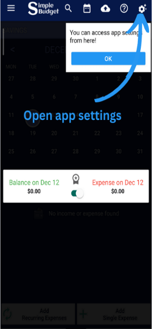
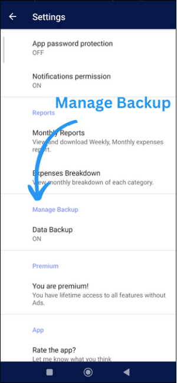
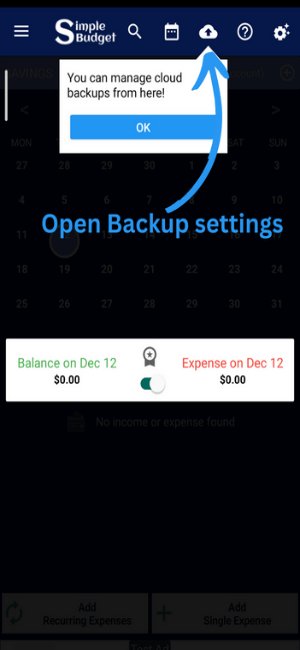
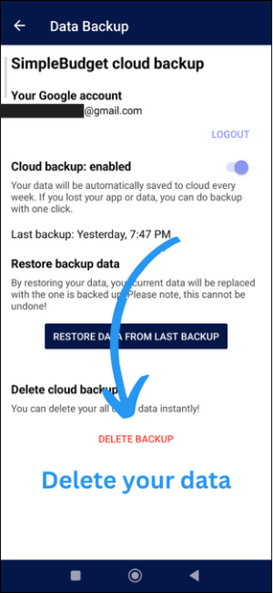
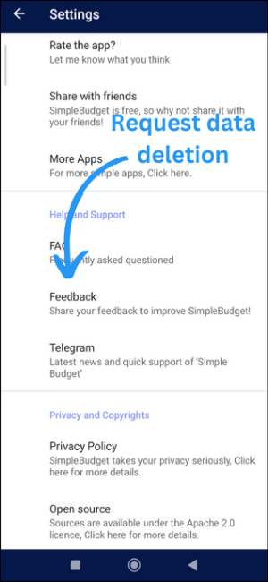

If you have enabled data backup than you can delete your data otherwise just uninstall Simple Budget app your data would be deleted!
You can access app settings from the top bar through gear icon.
If you data backup is enabled you'll see data backup ON otherwise you can login and access your data.
Newer version of the app has direct access to the Data Bacukp page.
On this page ypu can delete your data. You can login and delete if you are already logout!
Alternatively you can submit data deletion request via Feedback channel.
Alternatively, you can send us an email with the subject "Data Deletion Request" to request data deletion.